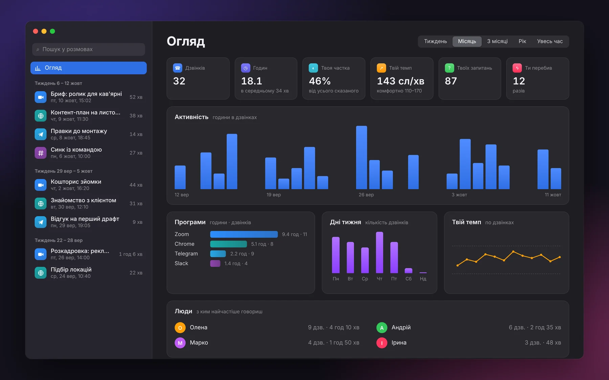
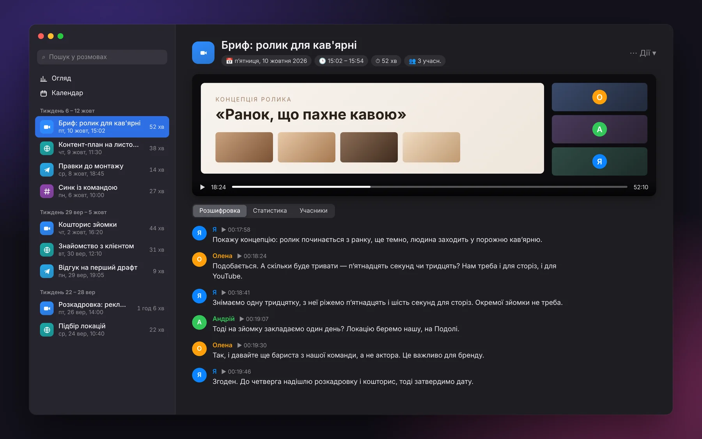
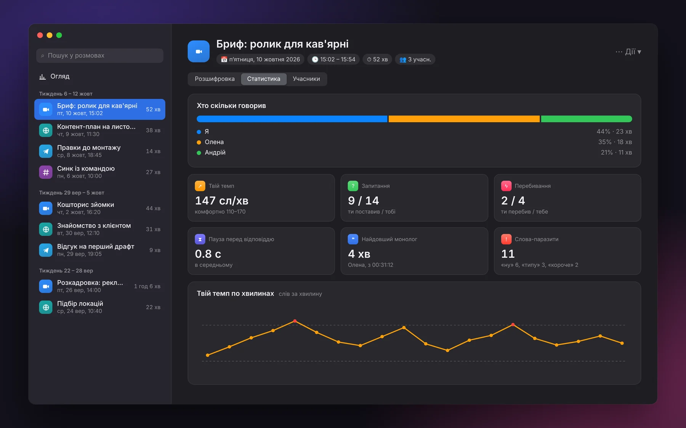
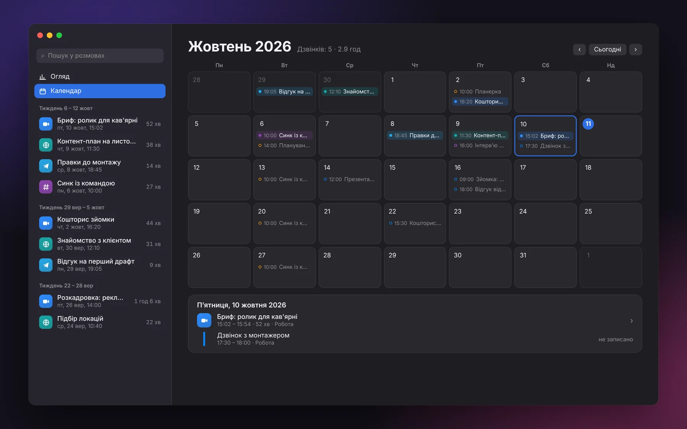

Rozmova сама помічає дзвінок у будь-якій програмі: Zoom, Google Meet у браузері, Telegram, Slack, FaceTime. Пише твій голос і співрозмовників, за бажанням екран, а потім розшифровує розмову прямо на твоєму Маці. Нічого не йде в хмару.
Для Mac на Apple Silicon (M1 і новіші), macOS 14 Sonoma або новіша.
Або одним рядком у Терміналі:
Те, за що сервіси-нотатники беруть щомісячну оплату, в одній легкій програмі в меню-барі.
Щойно програма бере мікрофон для розмови, справа зверху виїжджає віконце «Записати?». Фокус у дзвінка не забирає.
Zoom, Meet і Teams у браузері, Telegram, Slack, FaceTime, WhatsApp, Discord. Бот у дзвінок не заходить, ніхто нічого не помітить.
Твій мікрофон і звук системи пишуться на різні доріжки. У розшифровці точно видно, де говориш ти.
Інших учасників ділить за голосом: «Співрозмовник 1», «Співрозмовник 2». Імена можна вписати, і вони потраплять у текст.
NVIDIA Parakeet на Neural Engine: 25 європейських мов, зокрема українська. Безкоштовно й без інтернету. Хочеш хмару — є Groq.
Якщо треба, 30 кадрів/с зі звуком розмови. Зручно, коли показували презентацію, макет чи демо.
Усі розмови в одному вікні: пошук по тексту всіх дзвінків, плеєр, клік на репліку вмикає запис із цього місця.
Хто скільки говорив, твій темп, запитання, перебивання, паузи, слова-паразити. Огляд за тиждень, місяць, рік.
Технічні файли видаляються самі через 2 тижні. Відео, аудіо й розшифровки лишаються назавжди.
Ні акаунтів, ні аналітики, ні хмари. Записи лежать у теці на твоєму Маці й нікуди не відправляються.
Скільки завгодно дзвінків будь-якої довжини. Ні лічильника хвилин, ні платного плану.
Місяць дзвінків по днях, поруч зустрічі з Календаря macOS. Дзвінок, що йшов під час події, отримує її назву.
Від дзвінка до тексту без жодного клацання, крім «Записати».
Раз на 2 секунди дивиться, яка програма тримає мікрофон. Програми для диктування (Superwhisper, Wispr Flow) дзвінком не вважаються.
Мікрофон і звук системи на одній шкалі часу, плюс екран, якщо ввімкнено. Дзвінок закінчився — запис зупиняється сам.
За кілька хвилин приходить сповіщення «Розшифровка готова»: текст із часом і тим, хто говорить.
Статистика рахується з таймкодів слів, без мовних моделей. Усе одразу видно в «Моїх дзвінках».
Вікно «Мої дзвінки». Натискай вкладки.

Огляд за тиждень, місяць чи рік: скільки часу в дзвінках, у яких програмах, як змінюється твій темп і з ким говориш найчастіше.

Відео екрана зі звуком і розшифровка поруч. Клік на час репліки вмикає запис саме з цього місця.

Хто скільки говорив, твій темп по хвилинах і моменти, коли ти розганявся, запитання, перебивання, найдовший монолог і слова-паразити.

Дзвінки по днях, а поруч зустрічі з Календаря macOS: видно, що записано, а що ні. Клік на день показує його розклад, клік на дзвінок відкриває його.
Зображення — макети інтерфейсу з вигаданими даними; у програмі деталі можуть відрізнятись.
Звичайні файли, які відкриваються будь-чим. Аудіо чи текст можна закинути куди завгодно.
Тека змінюється в налаштуваннях, можна на зовнішній диск.
Зберігається в програмі назавжди, кілька КБ на дзвінок.
Rozmova не робить самарі нейронкою: текст можна закинути в будь-який чат-бот сам. Зате ось що виходить.
| Rozmova | Типовий сервіс-нотатник | |
|---|---|---|
| Ціна | Безкоштовно | Підписка |
| Бот приєднується до дзвінка | Ні | Часто так |
| Будь-яка програма для дзвінків | ✓ | Зазвичай кілька популярних |
| Ліміт хвилин | Немає | На безкоштовному плані є |
| Де лежать записи | На твоєму Маці | У хмарі сервісу |
| Розшифровка без інтернету | ✓ | — |
| Самарі й задачі від ШІ | — | ✓ |
| Відкритий код | ✓ | — |
Потрібні macOS 14 (Sonoma) або новіша і Mac на Apple Silicon (M1 і новіші).
Rozmova.dmg і перетягни Rozmova на папку Applications. Або встанови одним рядком у Терміналі, команда вгорі сторінки.xattr -dr com.apple.quarantine /Applications/Rozmova.appRozmova безкоштовна й не має платного сертифіката розробника Apple, тож не нотаризована. Один раз відкрий через Системні параметри → Приватність і безпека → «Усе одно відкрити» або виконай xattr -dr com.apple.quarantine /Applications/Rozmova.app.
Ні, якщо рушій розпізнавання — Parakeet (за замовчуванням): інтернет потрібен лише один раз, щоб скачати модель. Якщо в налаштуваннях обрати Groq, аудіо відправляється на розшифровку в Groq з твоїм ключем.
Він не обовʼязковий. Якщо дозволити, у «Моїх дзвінках» → «Календар» поруч із дзвінками видно зустрічі, а дзвінок, що йшов під час події, отримує її назву замість «Дзвінок у Zoom». Rozmova календар лише читає.
Потрібен дозвіл «Запис екрана й системного звуку»: Системні параметри → Приватність і безпека → увімкни Rozmova й перезапусти програму.
Популярні програми для диктування Rozmova пропускає сама. Для решти натисни у віконці «Це не дзвінок», і ця програма більше не потурбує.
Так: Rozmova пише мікрофон напряму, тож у розшифровку може потрапити те, чого співрозмовники не чули. Пам'ятай про це.
«Я» — завжди точно, бо це окрема доріжка. Інших програма ділить за голосом, і це здогадка: схожі голоси можуть злитися в один. Найчистіше виходить у навушниках.
Залежить від країни, але правило просте: попереджай людей, що дзвінок записується.
Потрібні Command Line Tools зі Swift 6 (xcode-select --install). Далі git clone https://github.com/slavashootit/rozmova.git && cd rozmova && ./build.sh.